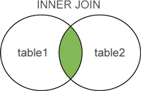
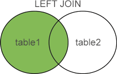
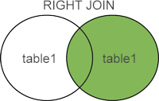
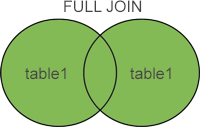

SQL JOIN：联合表
Join 是“连接”的意思，顾名思义，SQL JOIN 子句用于将两个或者多个表联合起来进行查询。
联合表时需要在每个表中选择一个字段，并对这些字段的值进行比较，值相同的两条记录将合并为一条。联合表的本质就是将不同表的记录合并起来，形成一张新表。当然，这张新表只是临时的，它仅存在于本次查询期间。
数据库中的表可以通过键将彼此联合起来，一个典型的例子是，将一个表的主键和另一个表的外键进行匹配。在表中，每个主键的值都是唯一的，这样做的目的是在不重复每个表中所有记录的情况下，将表之间的数据交叉捆绑在一起。
当两个表中有同名的字段时，为了帮助数据库引擎区分是哪个表的字段，在书写同名字段名时需要加上表名，表名和字段名以点号
表1：CUSTOMERS 表
表2：ORDERS 表
下面使用 SQL JOIN 语句连接连个表：
如果您不希望选取表的所有记录，也可以加上 WHERE 子句，如下所示：
SQL 先根据 ON 生成一张临时表，然后再根据 WHERE 对临时表进行筛选。
如果不加任何修饰词，只写 JOIN，那么默认为 INNER JOIIN，上面例子中就是如此。
在以上几种连接方式中，INNER JOIN、LEFT JOIN、RIGHT JOIN、FULL JOIN 是最常使用的连接方式，掌握它们是学好 SQL 的必备基础，下面我们借助示意图来加深读者对这几种连接方式的理解。
联合表时需要在每个表中选择一个字段，并对这些字段的值进行比较，值相同的两条记录将合并为一条。联合表的本质就是将不同表的记录合并起来，形成一张新表。当然，这张新表只是临时的，它仅存在于本次查询期间。
数据库中的表可以通过键将彼此联合起来，一个典型的例子是，将一个表的主键和另一个表的外键进行匹配。在表中，每个主键的值都是唯一的，这样做的目的是在不重复每个表中所有记录的情况下，将表之间的数据交叉捆绑在一起。
语法
使用 SQL JOIN 连接两个表的基本语法如下：SELECT table1.column1, table2.column2... FROM table1 JOIN table2 ON table1.common_column1 = table2.common_column2;table1.common_column1 = table2.common_column2 是连接条件，只有满足此条件的记录才会合并为一行。您可以使用多个运算符来连接表，例如 =、>、<、<>、<=、>=、!=、BETWEEN、LIKE 或者 NOT，但是最常见的是使用 =。
当两个表中有同名的字段时，为了帮助数据库引擎区分是哪个表的字段，在书写同名字段名时需要加上表名，表名和字段名以点号
.分隔，如下所示：
table_name.column_name
当然，如果书写的字段名在两个表中是唯一的，也可以不使用以上格式，只写字段名即可。示例
现在有以下两个表，分别是客户表和订单表。表1：CUSTOMERS 表
+----+----------+-----+-----------+----------+ | ID | NAME | AGE | ADDRESS | SALARY | +----+----------+-----+-----------+----------+ | 1 | Ramesh | 32 | Ahmedabad | 2000.00 | | 2 | Khilan | 25 | Delhi | 1500.00 | | 3 | kaushik | 23 | Kota | 2000.00 | | 4 | Chaitali | 25 | Mumbai | 6500.00 | | 5 | Hardik | 27 | Bhopal | 8500.00 | | 6 | Komal | 22 | MP | 4500.00 | | 7 | Muffy | 24 | Indore | 10000.00 | +----+----------+-----+-----------+----------+
表2：ORDERS 表
+-----+---------------------+-------------+--------+ |OID | DATE | CUSTOMER_ID | AMOUNT | +-----+---------------------+-------------+--------+ | 102 | 2009-10-08 00:00:00 | 3 | 3000 | | 100 | 2009-10-08 00:00:00 | 3 | 1500 | | 101 | 2009-11-20 00:00:00 | 2 | 1560 | | 103 | 2008-05-20 00:00:00 | 4 | 2060 | +-----+---------------------+-------------+--------+
下面使用 SQL JOIN 语句连接连个表：
SQL> SELECT ID, NAME, AGE, AMOUNT
FROM CUSTOMERS
JOIN ORDERS
ON CUSTOMERS.ID = ORDERS.CUSTOMER_ID;
执行结果：
+----+----------+-----+--------+ | ID | NAME | AGE | AMOUNT | +----+----------+-----+--------+ | 3 | kaushik | 23 | 3000 | | 3 | kaushik | 23 | 1500 | | 2 | Khilan | 25 | 1560 | | 4 | Chaitali | 25 | 2060 | +----+----------+-----+--------+
如果您不希望选取表的所有记录，也可以加上 WHERE 子句，如下所示：
SQL> SELECT ID, NAME, AMOUNT, DATE
FROM CUSTOMERS
JOIN ORDERS
ON CUSTOMERS.ID = ORDERS.CUSTOMER_ID;
WHERE AMOUNT >1515
ORDER BY AMOUNT;
执行结果：
+----+----------+--------+---------------------+ | ID | NAME | AMOUNT | DATE | +----+----------+--------+---------------------+ | 2 | Khilan | 1560 | 2009-11-20 00:00:00 | | 4 | Chaitali | 2060 | 2008-05-20 00:00:00 | | 3 | kaushik | 3000 | 2009-10-08 00:00:00 | +----+----------+--------+---------------------+
ON 和 WHERE 的区别
连接表时，SQL 会根据连接条件生成一张新的临时表。ON 就是连接条件，它决定临时表的生成。WHERE 是在临时表生成以后，再对临时表中的数据进行过滤，生成最终的结果集，这个时候已经没有 JOIN-ON 了。SQL 先根据 ON 生成一张临时表，然后再根据 WHERE 对临时表进行筛选。
不同的连接类型
SQL 允许在 JOIN 左边加上一些修饰性的关键词，从而形成不同类型的连接，如下表所示：| 连接类型 | 说明 |
|---|---|
| INNER JOIN | （默认连接方式）只有当两个表都存在满足条件的记录时才会返回行。 |
| LEFT JOIN | 返回左表中的所有行，即使右表中没有满足条件的行也是如此。 |
| RIGHT JOIN | 返回右表中的所有行，即使左表中没有满足条件的行也是如此。 |
| FULL JOIN | 只要其中有一个表存在满足条件的记录，就返回行。 |
| SELF JOIN | 将一个表连接到自身，就像该表是两个表一样。为了区分两个表，在 SQL 语句中需要至少重命名一个表。 |
| CROSS JOIN | 交叉连接，从两个或者多个连接表中返回记录集的笛卡尔积。 |
如果不加任何修饰词，只写 JOIN，那么默认为 INNER JOIIN，上面例子中就是如此。
在以上几种连接方式中，INNER JOIN、LEFT JOIN、RIGHT JOIN、FULL JOIN 是最常使用的连接方式，掌握它们是学好 SQL 的必备基础，下面我们借助示意图来加深读者对这几种连接方式的理解。
1) INNER JOIN
SELECT table1.column1, table2.column2... FROM table1 INNER JOIN table2 ON table1.common_column1 = table2.common_column2;以上 SQL 语句将产生 table1 和 table2 的交集，只有 table1 和 table2 中匹配的行才被返回，如下图所示：

2) LEFT JOIN
SELECT table1.column1, table2.column2... FROM table1 LEFT JOIN table2 ON table1.common_column1 = table2.common_column2;以上 SQL 语句将产生 table1 的全集，而 table2 中匹配的则有值，不能匹配的则以 NULL 值取代，如下图所示：

3) RIGHT JOIN
SELECT table1.column1, table2.column2... FROM table1 RIGHT JOIN table2 ON table1.common_column1 = table2.common_column2;以上 SQL 语句将产生 table2 的全集，而 table1 中匹配的则有值，不能匹配的则以 NULL 值取代，如下图所示：

4) FULL JOIN
SELECT table1.column1, table2.column2... FROM table1 FULL JOIN table2 ON table1.common_column1 = table2.common_column2;以上 SQL 语句将产生 table1 和 table2 的并集，能匹配和不能匹配的行全部被返回，但是能匹配的行将合并为一行，不能匹配的行将另一个表中的数据用 NULL 值替换，如下所示：

关注公众号「站长严长生」，在手机上阅读所有教程，随时随地都能学习。内含一款搜索神器，免费下载全网书籍和视频。

微信扫码关注公众号